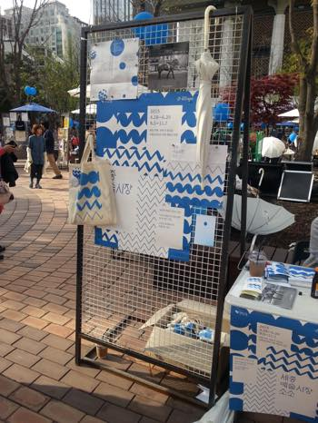

일하다가 딴짓^^;;
1.
한국와서 일주일정도 시차적응할때 웹툰을 몰아서 왕창 다 봤다
인터넷이 빠르니 휙휙 넘어가고 좋네잉
2.
반백수 프리랜서 모드
집에서 일하니 딴짓을 느므해서 쉐어오피스를 구해야하나
고민중
근데집에서 다 멀어 ㅜㅜ
3.
과자 / 교통 / 책 / 커피값은 비싼데
또 의외(?)로 던킨도너츠가서 6개 + 미니도넛 4개를 구입해도
만원이 넘지않아서 깜짝놀랐다
아니 이건 또 왜 이렇게 싼겨^^;;;
.....던킨도넛 자주가야것어 ㅋㅋㅋ
4.
해외에서의 생활은 그야말로 심플라이프였는데
확실히 한국이 훨 바쁘다
친구들도 있고 집에서 따순밥먹고
여기저기 마켓구경도 신나게 하는중
그리고 체력이 딸려.....OTL
역시 운동을 해야^^;;;;
5.
손그림!! 수작업을 해야겠다!!
예술혼(....)을 활활불태우것어!! 화이팅(←;;;)
6.
4월도 다 간다
시간은 왤케빨라 @_@